mapping 25.0 px/cell, residual 0.0 px, foreground by ring
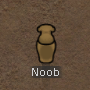 | Noob [0, 0] | HOLE: 67% of the silhouette is enclosed ground-coloured pixels: an alpha hole, a missing layer, OR a body filled with the ground's own colour — ring mode cannot tell these apart; reshoot with a clean plate |
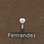 | Fernandez [7, 0] | passed tier a |
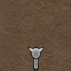 | Nails [14, 0] | OFF_CELL: the drawn mass sits 0.70 cells from the cell centre — subject displaced, or the board geometry is wrong |
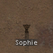 | Sophie [21, 0] | passed tier a |
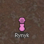 | Rynyk [28, 0] | passed tier a |
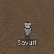 | Sayuri [0, -7] | passed tier a |
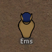 | Ems [7, -7] | HOLE: 20% of the silhouette is enclosed ground-coloured pixels: an alpha hole, a missing layer, OR a body filled with the ground's own colour — ring mode cannot tell these apart; reshoot with a clean plate |
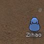 | Zihao [14, -7] | OFF_CELL: the drawn mass sits 0.78 cells from the cell centre — subject displaced, or the board geometry is wrong OVERFLOW: 8% of the surrounding ground is covered — the sprite draws outside its cells (or a neighbour/foreign object intrudes) |
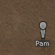 | Pam [21, -7] | EMPTY: only 0.4% of the cell differs from the ground (ring mode) — but 5% of the surrounding ring is foreground, so the subject is probably DISPLACED off its declared cell |
| Snuggler [28, -7] | passed tier a | |
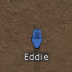 | Eddie [0, -14] | passed tier a |
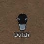 | Dutch [7, -14] | passed tier a |
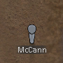 | McCann [14, -14] | passed tier a |